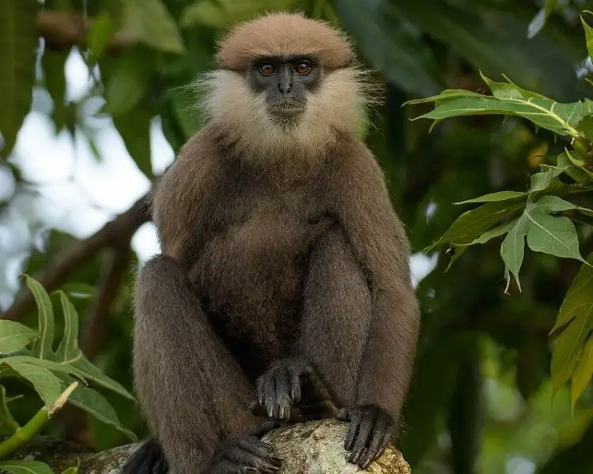
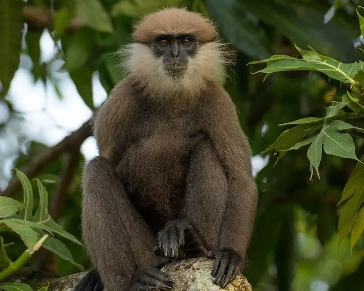
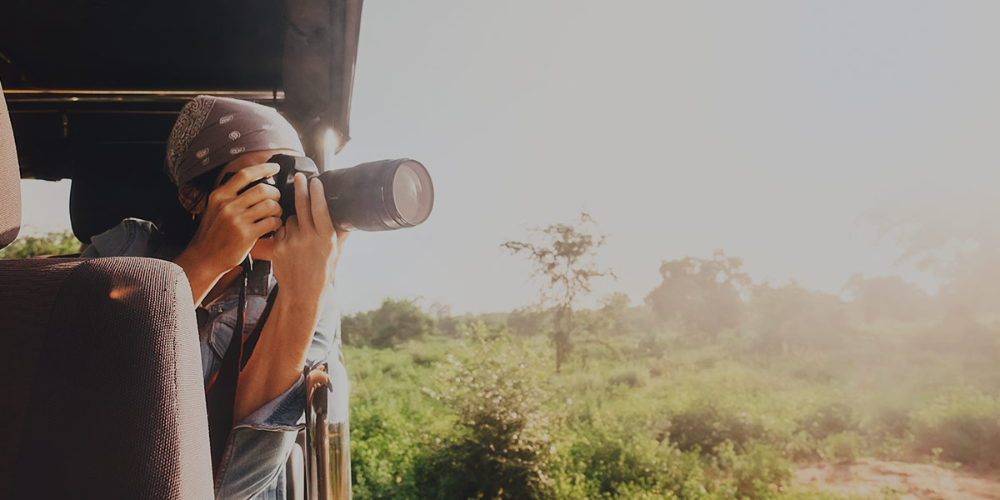

YALA NATIONAL PARK

 


Yala National Park (otherwise known as Ruhuna National Park) is one of Sri Lanka’s must-sees. Located to the south east of the island, this exceptional game reserve is Sri Lanka’s most popular for very good reason. Thought to be home to the greatest density of leopards per square kilometre in the world, Yala covers an area of 1,260 square kilometres and is divided into five blocks. Block I is the most visited portion of the reserve and the most rewarding destination for a leopard safari. Leopards are usually elusive, though in Yala, sightings of them are extremely good – you might see them basking in the sun atop rocky outcrops, in trees, crossing tracks and beside waterholes. Alongside leopards, there are also sloth bears, Asian elephants, deer, monkeys, buffalo and many species of birds. If you’re really set on seeing leopards, Yala will offer you Sri Lanka’s best opportunity.
About Yala National Park
Yala National Park contains five blocks, with the two south-eastern coastal blocks being the most frequently visited by the public. The park is also connected to adjoining wildlife sanctuaries and national parks, the largest of which is the Lunugamvehera National Park. Overall, Yala covers an area of 979 square kilometres that hosts a variety of different ecosystems, ranging from jungles to freshwater wetlands, that makes it an ideal home for several species of wildlife.
The Wildlife in Yala
Yala is home to more than 200 species of birds and 40 species of mammals, but it is probably most well-known for its leopard population. There are more leopards per unit of land in Yala than almost anywhere else in the world, and the park is considered to have far more leopards sightings than any other national park on the island. It is best to visit between January and July to increase your chances of spotting these magnificent creatures. Elephants can also be spotted at Yala, but the possibility of sighting them varies throughout the season. This is because Lunugamvehera National Park acts as a natural corridor between Yala and Udawalawe National Park, which the elephants use to move between habitats. Your best chance of spotting them is during the dry season, between May and August. Yala is also home to crocodiles, peacocks, monkeys, sloth bears, water buffalo, wild boar, deer and golden jackals. Around 130 different species of birds have also been recorded in the park, including pelicans, storks, herons and flamingos.
Tips and Tricks
Planning your wildlife safari in Sri Lanka can be challenging – especially if you don’t know where to start. Follow our guide and these useful tips and tricks for a great experience!
- If you haven’t arranged for any meals during an afternoon safari, try and bring your own packed lunches. However, remember that anything you bring with you must be taken back. Do not litter the park, especially with plastic bottles and wrappers, or leave behind anything that could negatively affect the park’s ecosystem.
- The average temperature at the park hovers around 27 degrees Celsius, although it can reach heights of 37 degrees during the dry season. Make sure that you bring a bottle of water along.
- The best time to visit the park is at 6AM, as soon as it opens, or after 4PM, when the animals emerge out of their shadowed hideaways from the sun.